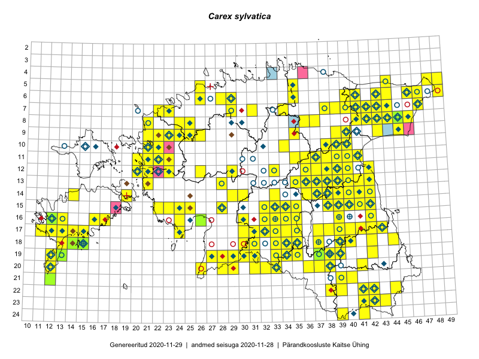

Carex sylvatica
Uuendatud: 2016-12-01
Kaardile koondatud taksonid: Carex sylvatica Huds.

Kaart põhineb 269 kirjel.
Kuvatud viited 20 esimesele andmebaasikirjele, ülejäänud PlutoFis
- Malle Leht: 2015-07-09: : ala
- Toomas Kukk, Peedu Saar: 2014-09-25: 07-42: ala
- Toomas Kukk, Peedu Saar: 2014-09-24: 06-40: ala
- Toomas Kukk, Peedu Saar: 2014-09-24: 06-41: ala
- Peedu Saar, Ott Luuk: 2015-06-21: 14-41: ala
- Peedu Saar, Ott Luuk: 2015-06-21: 14-42: ala
- Ott Luuk, Peedu Saar: 2015-07-27: 11-35: ala
- Peedu Saar: 2015-07-04: 18-44: ala
- Peedu Saar: 2015-07-14: 15-38: ala
- Peedu Saar: 2015-07-15: 15-39: ala
- Peedu Saar, Eerik Leibak: 2015-07-30: 15-42: ala
- Toomas Kukk, Eerik Leibak: 2015-04-26: 05-49: ala
- Toomas Kukk, Peedu Saar: 2014-07-09: 07-43: ala
- Toomas Kukk, Peedu Saar: 2014-07-09: 08-44: ala
- Toomas Kukk, Eerik Leibak: 2015-04-25: 06-46: ala
- Toomas Kukk, Eerik Leibak: 2015-04-26: 06-49: ala
- Toomas Kukk, Eerik Leibak: 2015-04-27: 07-41: ala
- Peedu Saar, Liina Oja: 2015-06-08: 10-34: ala
- Ott Luuk, Peedu Saar: 2015-08-12: 23-43: ala
- Peedu Saar, Liina Oja: 2015-06-12: 13-35: ala